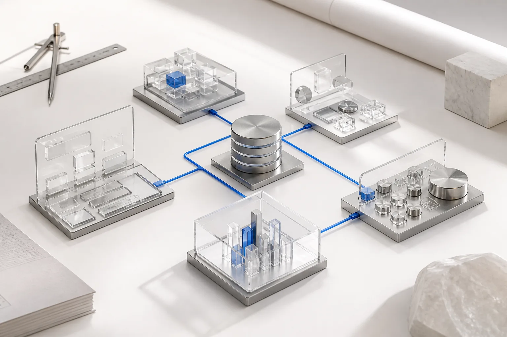
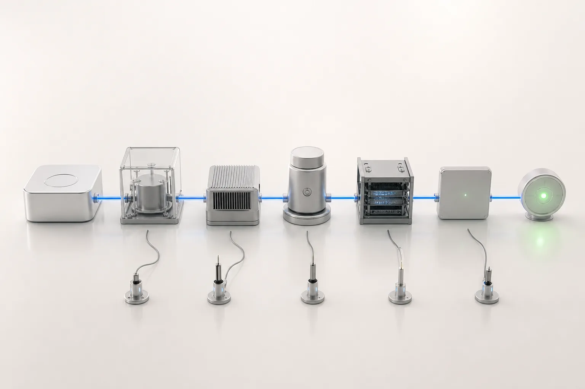
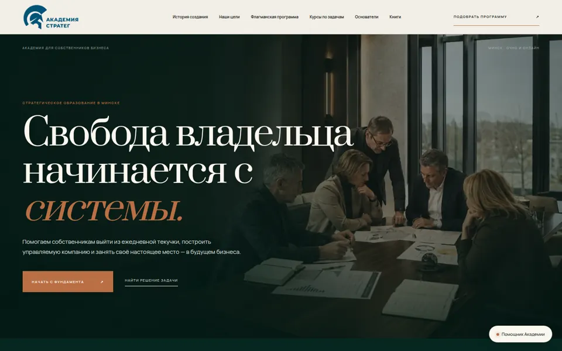
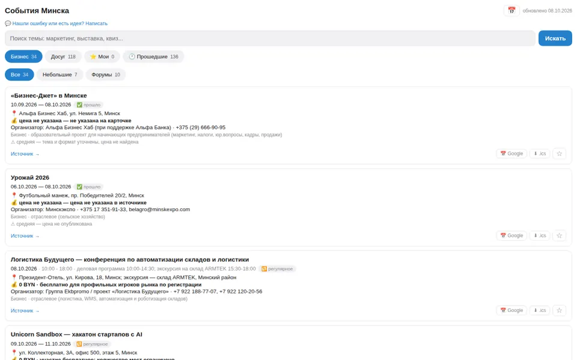
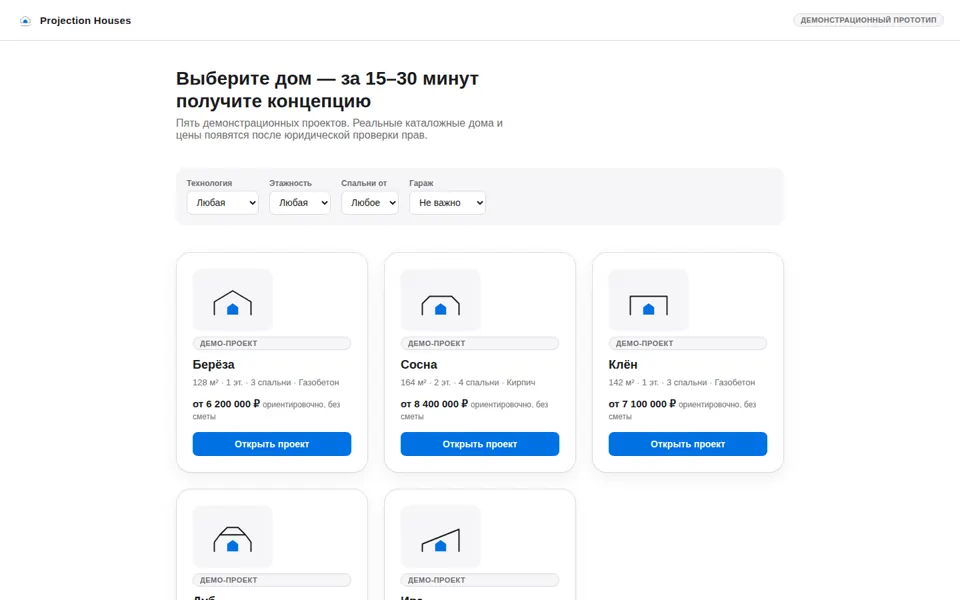

01
Исследую
Фиксирую задачу и границы агента.
Разбираю процесс, источники данных, права доступа и ситуации, где решение должен принимать человек.
Use case · данные · ограниченияДмитрий Байда · AI Agent & Automation Engineer
Проектирую и запускаю агентные системы, которые работают с памятью, инструментами и корпоративными данными, интегрируются с CRM и оставляют критичные решения человеку.
Посмотреть проекты ↓Инженерный подход
Начинаю с процесса и ограничений, затем проектирую контекст, инструменты, память, интеграции и контрольные точки. Результат проверяю на реальном сценарии и сопровождаю после запуска.
Сначала собираем факты, ограничения и реальные задачи. Затем отделяем сигнал от шума.
Разбираю процесс, источники данных, права доступа и ситуации, где решение должен принимать человек.
Use case · данные · ограниченияОпределяю системный промпт, структурированный контракт ответа, маршрутизацию, интеграции и Human-in-the-loop.
LLM · tools · memory · HITL
Тестирую ответы, ошибки, повторную обработку, ручное подтверждение и фактический результат в CRM или рабочем интерфейсе.
Тесты · наблюдаемость · сопровождение
Практический опыт
Приоритет — решения, которые уже используются в production или прошли проверку на реальных данных.
Персональная агентная платформа
Разработал и поддерживаю AI-агента в Telegram и MAX: маршрутизация между Claude Code и Codex, изолированные сессии, долговременная память с embeddings и полнотекстовым поиском, планировщик задач, голосовой ввод/ответ, отправка файлов, crash recovery и circuit breaker. Критичные действия проходят через Human-in-the-loop подтверждение.
Node.js · LLM tools · SQLite · FTS · embeddings · systemdAI-квалификация и лидогенерация
Self-hosted система на n8n и Docker принимает заявки из нескольких источников, нормализует данные и создаёт контакты и сделки в amoCRM. AI-квалификатор ведёт диалог в Telegram, возвращает structured JSON, хранит контекст, переводит квалифицированный лид на нужную стадию и эскалирует сложные случаи менеджеру.
Открыть связанный сайт ↗
Мониторинг и Telegram Mini App
Система регулярно собирает данные из множества источников, проверяет, дедуплицирует и классифицирует события. Пайплайн сохраняет историю статусов, отделяет автоматический сбор от редакторской проверки и публикует подтверждённую сборку в Telegram Mini App.
Открыть приложение ↗
Data pipeline · B2B-разведка
Переносимый движок получает закупочные данные через API, фильтрует по региону, ключевым словам, ОКПД2 и сумме, дедуплицирует и ранжирует возможности. Первый проверочный прогон: 42 лида, 8 высокой релевантности.
REST API · SQLite · фильтрация · ранжированиеКорпоративный документооборот
Telegram-бот и API для нескольких направлений и юрлиц: разбирает и валидирует реквизиты, формирует договоры, счета и акты из DOCX-шаблонов по одному или пакетом, ведёт нумерацию и журнал движения документов.
Bot API · REST · PostgreSQL · Docker · DOCX/PDFСистемная архитектура · BIM
Прототип системы параметрического проектирования частных домов. Архитектурное ядро — собственный контейнер .phouse поверх IFC со связанными 2D/3D-дисциплинами и CAD/BIM-экспортом.

Релевантный стек
Claude Code, Codex, промпт-инжиниринг, tools, structured output, память сессий, автоматическое продолжение и несколько каналов взаимодействия.
Подтверждение пользователем, эскалация менеджеру, права доступа, fallback-сценарии, circuit breaker и понятные ошибки.
Embeddings, SQLite, FTS, индексация корпоративной памяти и гибридный поиск. Следующий этап — перенос retrieval-слоя на Qdrant/Elasticsearch и RAG-пайплайн.
n8n, REST API, webhooks, amoCRM, Telegram/MAX, PostgreSQL, Docker, VPS, системные сервисы, журналирование и мониторинг.
Инженерная самостоятельность
Читаю код, документацию и текущую инфраструктуру, фиксирую ограничения и быстро выхожу на проверяемое изменение.
Тестирую не отдельную функцию, а путь от входного события и модели до записи в корпоративной системе.
Для рискованных действий проектирую подтверждение, ограничения прав и безопасный fallback.
Веду историю решений, Git, инструкции по эксплуатации и диагностику production-систем.
Контакты